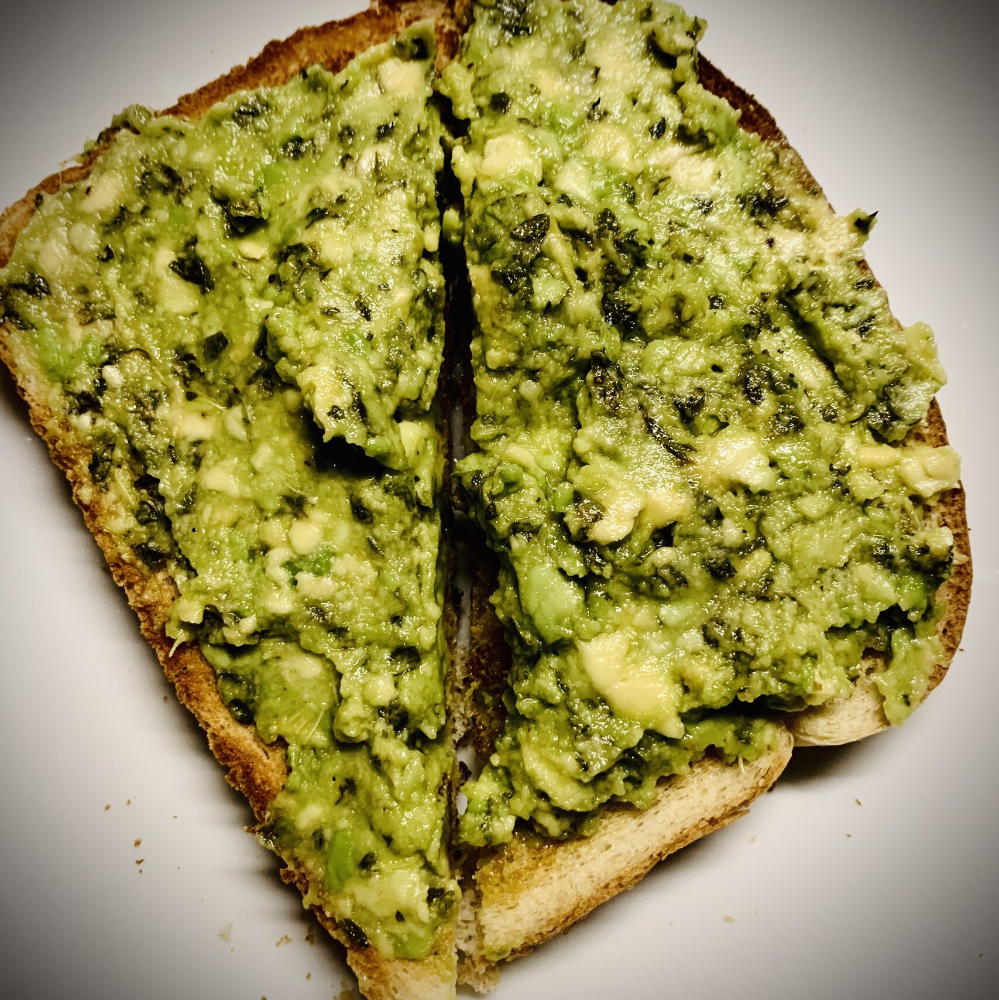

Avocado Toast

Description:
- 4 slices whole-grain bread
- 1 avocado, halved and pitted
- 2 tablespoons chopped fresh parsley
- 1 ½ teaspoons extra-virgin olive oil
- ½ lemon, juiced
- ½ teaspoon salt
- ½ teaspoon ground black pepper
- ½ teaspoon onion powder
- ½ teaspoon garlic powder
Steps:
- Toast bread in a toaster or toaster oven.
-
Scoop avocado into a bowl. Add parsley, olive oil, lemon juice, salt,
pepper, onion powder, and garlic powder; mash together using a potato
masher. Spread avocado mixture into each piece of toast.